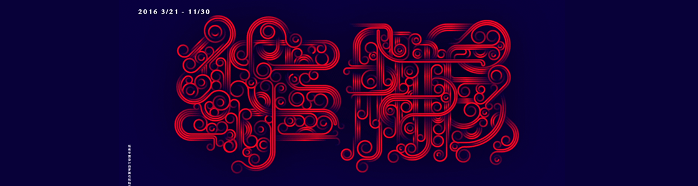

VR体验生活（VR体验生活）
中华上下五千年，华夏文明源远流长。“中国有礼仪之大，故称夏；有章服之美，谓之华”。“华夏礼服”除了是人体美学的载体之外，更是几千年传统文 的智慧结晶。随着经济水平提高，人们对于时尚的理解更加深刻；服饰文化历史悠久，给设计师们提供了诸多的灵感和广阔的创新空间。由此，视觉中国旗下视 区携手报喜鸟共促首届中国华服设计大赛（The First Chinese Garment Design Contest），一起寻找最具时代精神的、最具魅力的华服。与现代时尚的服装设 ，华服设计强调两个基础元素：一是典型的中华民族文化符号，二是特色鲜明的中华民族服饰语言。符号和语言是民族文化的展现。像华服制作时用到的高级面 及立领、盘扣、刺绣、连襟的细节设计，都是你在设计时候需要综合考虑的元素。另外，与大众时尚的服装设计也不尽相同，华服作为美学与传统文化完美融合 更强调私人定制这一重要意义。如果是千篇一律的设计，毫无创新意义，那就违背了本次大赛初衷。我们期待你的作品能够脱颖而出，我们会制作成衣，我们更 着你设计的华服的朋友能享受到中国式私人专属时尚和无比的尊荣。
中华上下五千年，华夏文明源远流长。“中国有礼仪之大，故称夏；有章服之美，谓之华”。“华夏礼服”除了是人体美学的载体之外，更是几千年传统文 的智慧结晶。随着经济水平提高，人们对于时尚的理解更加深刻；服饰文化历史悠久，给设计师们提供了诸多的灵感和广阔的创新空间。由此，视觉中国旗下视 区携手报喜鸟共促首届中国华服设计大赛（The First Chinese Garment Design Contest），一起寻找最具时代精神的、最具魅力的华服。与现代时尚的服装设 ，华服设计强调两个基础元素：一是典型的中华民族文化符号，二是特色鲜明的中华民族服饰语言。符号和语言是民族文化的展现。像华服制作时用到的高级面 及立领、盘扣、刺绣、连襟的细节设计，都是你在设计时候需要综合考虑的元素。另外，与大众时尚的服装设计也不尽相同，华服作为美学与传统文化完美融合 更强调私人定制这一重要意义。如果是千篇一律的设计，毫无创新意义，那就违背了本次大赛初衷。我们期待你的作品能够脱颖而出，我们会制作成衣，我们更 着你设计的华服的朋友能享受到中国式私人专属时尚和无比的尊荣。
端午大傻子
2016年3月3日 16:30:29
端午妞妞不吃肉端午妞妞不吃肉端午妞妞不吃肉端午妞妞不吃肉端午妞妞不吃肉端午妞妞不吃肉端午妞妞不吃肉端午午妞妞不吃肉端 端午妞妞不吃肉端午妞妞不吃肉端午妞妞不吃肉端午妞妞不吃肉端
端午大傻子
2016年3月3日 16:30:29
端午妞妞不吃肉端午妞妞不吃肉端午妞妞不吃肉端午妞妞不吃肉端午妞妞不吃肉端午妞妞不吃肉端午妞妞不吃肉端午午妞妞不吃肉端 端午妞妞不吃肉端午妞妞不吃肉端午妞妞不吃肉端午妞妞不吃肉端
哈哈，你说的对！